|
Living near Flatville is conducive to the cycling habit.
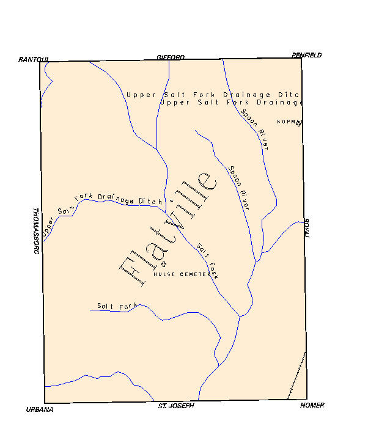
Topo map sans contours, don't really need them.
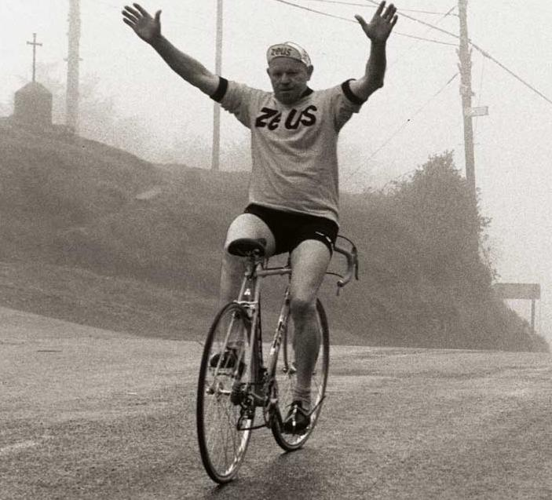
Hey Zeus! Don't try this at home.
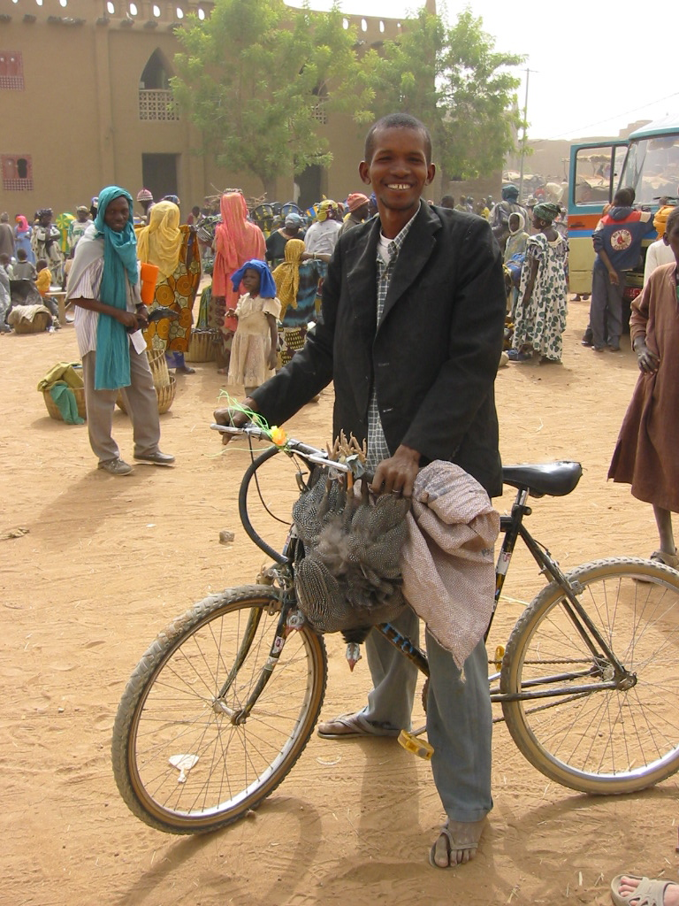
Bikes at work I: Three Guinea Hens in the market in Djenne, Mali.
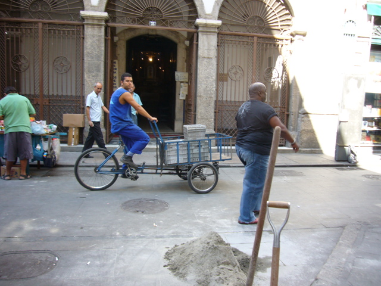
Bikes at work II: Porteur in Rio.
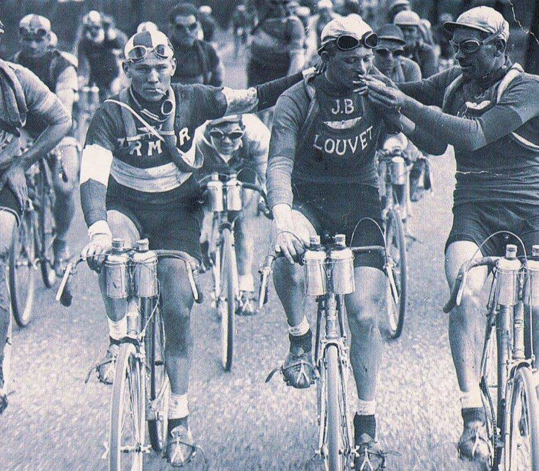
Bikes at work III: Substance Abuse in the Tour de France.
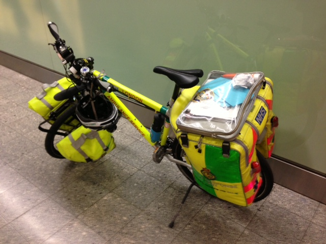
Bikes at work IV: London Ambulance Bike.
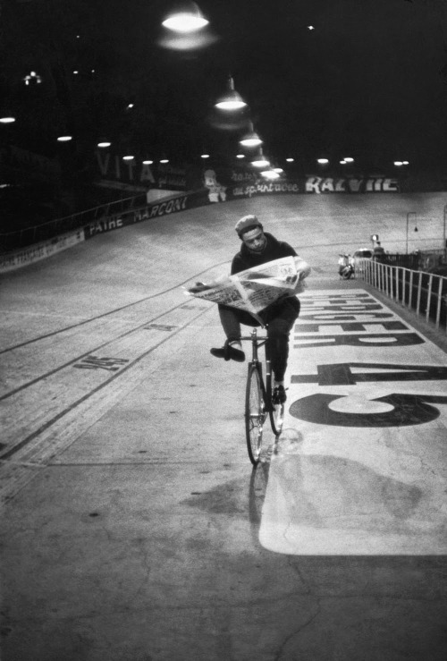
Bikes at work V: Velodrome News -- Cartier-Bresson.
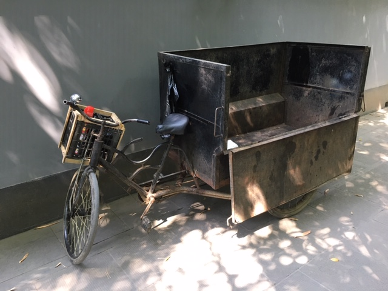
Bikes at work VI: Chengdu Cargo Bike
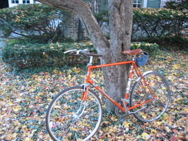
My bikes I: The reliable commuter -- circa 1974 Peugeot UO8.
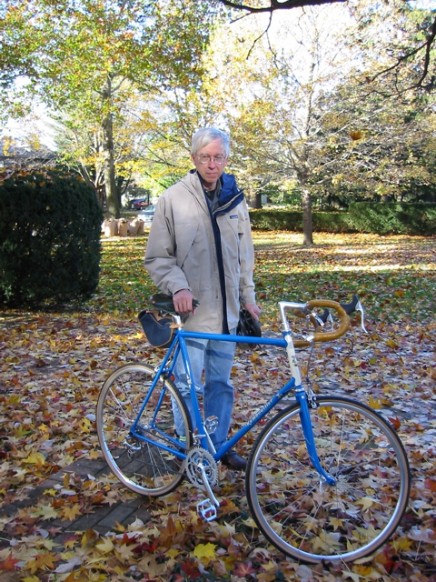
My bikes II: The great descender -- Rivendell Rambouillet 2004.
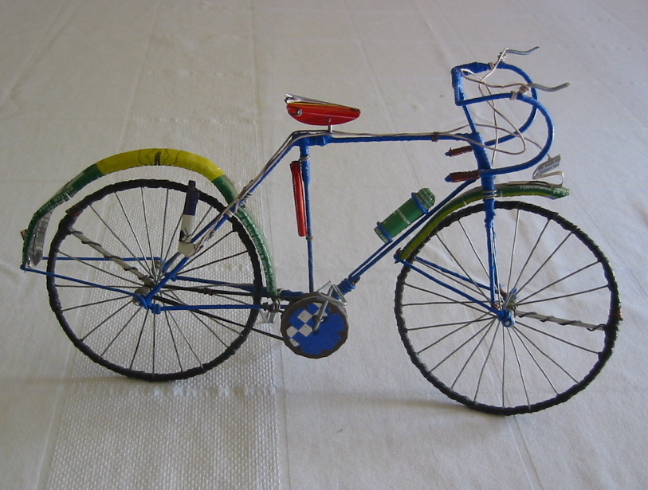
My bikes III: Bug spray bike -- Bamako, 2004.
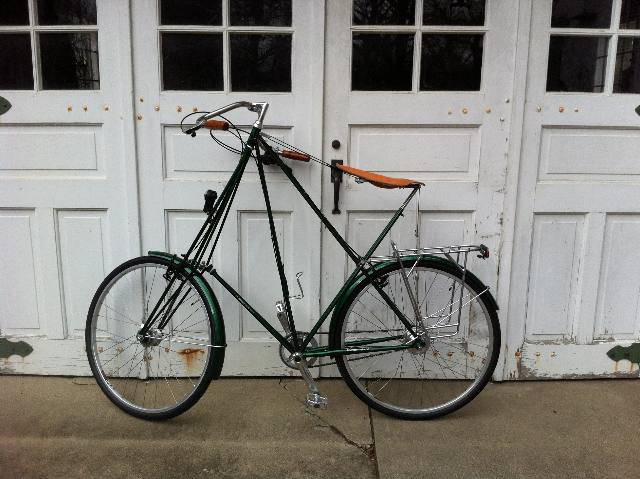
My bikes IV: The new commuter -- Kemper Pedersen 2011, the ultimate retro-grouch
riding machine.
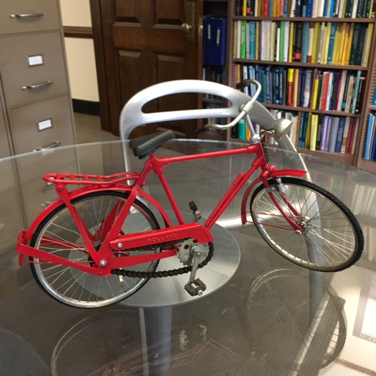
My bikes V: My new Dutch bike direct from the Amsterdam Econometric Games.
|